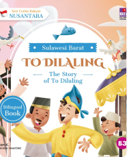

Di Bukit Napo, Sulawesi Barat berdiri Kerajaan Balanipa yang dipimpin oleh seorang raja yang bernama Raja Balanipa. Raja yang bertubuh tegap itu adalah seorang raja yang ingin berkuasa selamanya. Ia juga adalah seorang raja yang sangat disegani oleh rakyatnya.
Kerajaan Balanipa ini berada di daerah yang subur. Hasil kekayaan alamnya melimpah dan dapat menambah penghasilan rakyat. Tak heran, Kerajaan Balanipa ini termasuk negeri yang makmur dan kaya.
Raja Balanipa memimpin rakyatnya dengan bijaksana dan adil. Namun, sikap Raja Balanipa itu berubah sejak istrinya meninggal dunia. Bahkan, ia tidak mempunyai rasa kasih sayang dan belas kasihan kepada kesukaanya, terutama kepada anak laklakinya.
Sudah tiga puluh tahun lamanya Raja Balanipa menjalankan roda pemerintahannya. Selama itu pula ia telah bosan dan ingin mau turun dari tahta pemerintahannya. Ia hanya ingin berkuasa selamanya. Bahkan, ia tidak mau mewariskan jabatan raja kepada anak lakilakinya.
Sementara itu, permaisuri tak dapat berbuat apa-apa dengan sikap dan keputusan Raja Balanipa. Permaisuri tak dapat membujuk anak raja itu hanya bersabar dengan sikap Raja Balanipa yang seakan membenci anak laklakinya.
Dengan hatinya yang hampa itulah anak raja itu hanya bisa bersabar dan tidak mengeluh. Namun, sakit Raja Balanipa itu memimpan rakyatnya dengan bijaksana dan adil. Namun, sakit Raja Balanipa itu berubah sejak istrinya meninggal dunia. Bahkan, ia tidak mempunyai rasa kasih sayang dan belas kasihan kepada kesukaanya, terutama kepada anak laklakinya selagi ia punya harapan bisa mendapatkan kasih sayang peri ketuaan dari ayahnya. Kepada kedua anak laklakinya pun, Raja Balanipa tega melakukan tindakan yang kasar. Anak itu dirempang dan dibabung. Akibatnya, kedua anak tersebut merasa malu terbebut menjadi korban.
"Aku harus menyingkirkan kedua anak laki-lakku jauh-jauh. Jika tidak kukucakan, kedudukanku sebagai raja ini terancam. Aku tak mau hal ini terjadi. Aku akan segera memanggil patih untuk menyingkirkan kedua anak laki-lakku itu," pikir Raja Balanipa.
Tak lama kemudian, Raja Balanipa memanggil patih dan para hulubalangnya. Dia segera memerintahkan patih beserta hulubalangnya untuk melakukan sesuai dengan apa yang diinginkannya.
"Cepat laksanakan perintah itu, Patih."
"Baik, Tuanku. Hamba akan laksanakan titah raja. Hamba akan membawa kedua putra raja pergi jauh ke negeri seberang."
Sementara itu, permaisuri memperhatikan semua sikap dan perakatan raja dan patih. Perempuan itu hanya terdiam dan terpekur. Permaisuri tak dapat berbuat apa-apa dengan keputusan Raja Balanipa. Setiap mengandung, permaisuri selalu cemas. Ia khawatir anak yang dilahirkan akan dibuat Raja Balanipa juga.
permaisuri queen deserve better honestly... masa suami sendiri segitu kejamnya sama anak2 mereka??? divorce him bestie 👑
2025 - 11 - 11
Cerita ini mengingatkan pada pepatah 'takut akan bayangan sendiri'. Raja yang takut kehilangan tahta sampai rela mengorbankan darah dagingnya sendiri. Tragis sekali.
2025 - 11 - 03
Gak seru, jelek
2025 - 10 - 20